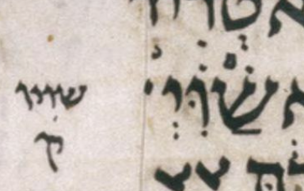

Contents:
Near-Aleppo adopts the following pointed ketiv, without a final sheva:
שַׁוִּ֗י
Ben judges the reported sheva a likely Leningrad peculiarity, unlikely to have been in Aleppo, on the evidence of its absence in the other manuscripts as represented by MAM's note. This is an inferred editorial decision following MAM's body-text choices, not a surviving Aleppo reading.
This case has limited relevance to near-Aleppo: the Aleppo Codex is not extant at Daniel 5:21. It illustrates a question about pointing the ketiv from MAM's pointed qere, rather than establishing an Aleppo reading.
| MAM ketiv | MAM qere | Leningrad ketiv |
|---|---|---|
| שוי | שַׁוִּ֗יו | שַׁוִּ֗יְ |

Leningrad, page 442v: the pointed ketiv is at right and the marginal qere at left. The two dots of the sheva are visible beneath the final yod. The interpretation of that sheva is discussed below.
English translation of Avi's MAM note: The ketiv of שוי with the following pointed qere is consistent with Sassoon 1053, the Cambridge manuscript, British Library Or. 2375, printed editions, and Koren:
שַׁוִּ֗יו
The Leningrad ketiv surprisingly reads:
שַׁוִּ֗יְ
The yod bears sheva; see Dotan's note.
MAM with doc — Daniel 5:21. “Is consistent with” allows for the difference in presentation: manuscripts normally have pointed ketiv and unpointed qere, whereas MAM has pointed qere.
Ben proposes that the final sheva reported under the ketiv's yod is an orphan resting sheva signaling a closed syllable whose final consonant in the qere is vav. On this hypothesis, the sheva need not be written under that qere vav. Nonetheless, the implied pointing can be shown with a sheva under the final vav:
שַׁוִּ֗יוְ
This is a visualization of Ben's hypothesis, not MAM's printed qere. Producing the reported Leningrad pointed ketiv from MAM's pointed qere would therefore require a mark absent from that qere. This proposed explanation concerns the reported Leningrad pointing, not the pointing adopted by near-Aleppo.
This interpretation is Ben's hypothesis, not an explanation supplied by Avi's note. The note does not explain the sheva; whether Avi has an explanation is unknown. View Daniel 5:21 in Leningrad (page 442v). The editorial decision adds no general algorithmic rule.
These two ketiv/qere pairs differ only in their accents: mahapakh at 5:7 and merkha at 5:29. MAM's ketiv has vav after nun where its qere has yod. Near-Aleppo adopts the following pointings of MAM's ketiv, with the qere's marks on the corresponding letters. Aleppo is not extant at either verse; these are inferred editorial readings.
| Verse | MAM ketiv | MAM qere | Near-Aleppo |
|---|---|---|---|
| Daniel 5:7 | והמנוכא | וְהַֽמְנִיכָ֤א | וְהַֽמְנִוכָ֤א |
| Daniel 5:29 | והמנוכא | וְהַֽמְנִיכָ֥א | וְהַֽמְנִוכָ֥א |
MAM's notes distinguish this spelling from Leningrad's ketiv of והמונכא, which has vav after mem, before nun. See the Hebrew notes at MAM with doc — Daniel 5:7 and MAM with doc — Daniel 5:29.
English translation of the MAM note at Daniel 5:7: This reading is consistent with British Library Or. 2375, the Cambridge manuscript, the Yemenite manuscript T451, and Leningrad's masorah. The ketiv is:
וְהַֽמְנִוכָ֤א
It has vav after nun in place of the qere's yod; likewise in the Lisbon Bible. Leningrad's ketiv is:
וְהַֽמְונִכָ֤א
It has vav after mem, before nun, as also in Koren. Notes by Breuer and the tanach.us transcription (version unspecified in the MAM note). MAM with doc — Daniel 5:7.
In the comparison below, the sequence מנו abbreviates the full ketiv of והמנוכא, and the sequence מונ abbreviates the full ketiv of והמונכא. Leningrad's masorah is listed separately from its written ketiv. MAM adopts the spelling with מנו at both verses.
| Spelling | 5:7 | 5:29 |
|---|---|---|
| מנו | Cambridge manuscript; T451; British Library Or. 2375; Leningrad masorah; Lisbon Bible | Cambridge manuscript; T451; Leningrad masorah; Lisbon Bible |
| מונ | Leningrad ketiv; Koren | British Library Or. 2375; Leningrad ketiv; Sassoon 1053; Koren |
“Not cited” means that the note does not mention the source. Citation-only references, which assign no spelling, are discussed below.
| Source | 5:7 | 5:29 |
|---|---|---|
| Cambridge manuscript | מנו | |
| T451 | מנו | |
| British Library Or. 2375 | מנו | מונ |
| Leningrad masorah | מנו | |
| Leningrad ketiv | מונ | |
| Sassoon 1053 | Not cited | מונ |
| Lisbon Bible | מנו | |
| Koren | מונ | |
The accent is mahapakh at 5:7 and merkha at 5:29. Both notes cite Breuer; 5:7 also cites the tanach.us transcription (version unspecified in the MAM note), and 5:29 names Simanim and Mechon Mamre. These citations do not assign those sources a spelling in the notes, so they are not included in the spelling tables. MAM with doc — Daniel 5:7 and MAM with doc — Daniel 5:29.